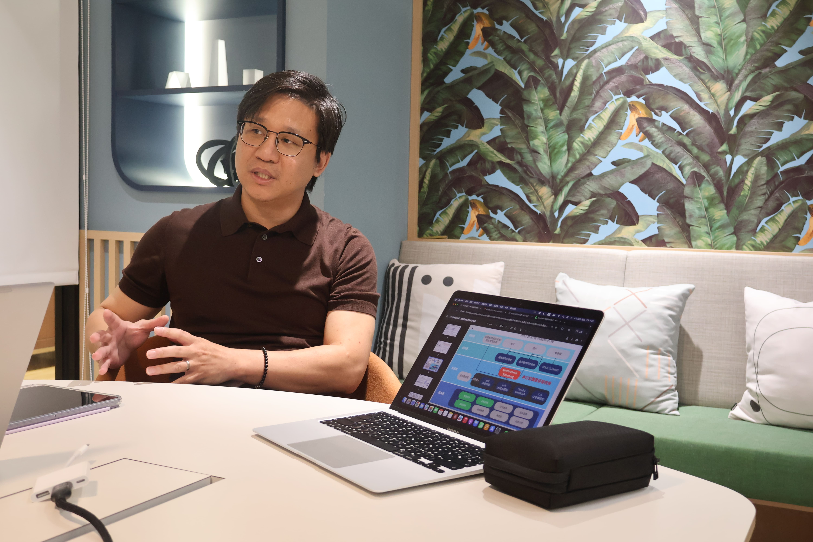
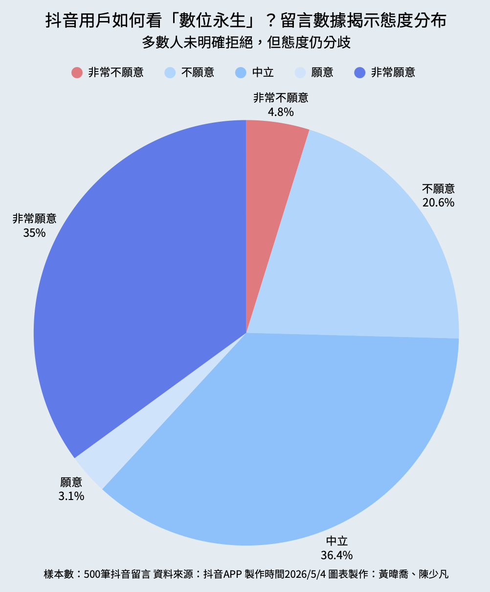

語言技術困難
台灣超級頭腦資訊科技工作室負責人周子豪指出，語言模型的擬真度會直接影響使用者的真實感受。即使能直接導入中國的語言模型，仍可能因文化與慣用語差異，讓使用者產生落差感，影響服務體驗。陳柏言也說明，國語系統仍可透過中國技術進行語法調整，但台語語言系統的訓練才是最大挑戰。由於台語屬於市場較少投入的語言，目前缺乏足夠開發資源，也限制台灣推動數位永生技術的發展。
digital immortality
【記者陳少凡、黃暐喬、陳雙、顏貝恩報導】
音樂響起，伴隨俏皮幽默的步伐，曾經的秀場天王豬哥亮竟緩緩從側台走出，再次登上了螢光幕。2026年除夕夜晚上節目「民視第一發發發」，主辦方運用人工智慧技術重現已逝主持人豬哥亮的影像，讓現場主持人能夠與影像中的豬哥亮展開跨時空交談。影像中的豬哥亮，不但重現了他經典的主持風格，就連說話的神情、幽默風趣的主持口吻都被復刻。
打開手機，離世多年的親人站在手機螢幕裡和你打招呼。數位永生透過收集逝者生前留下的影像和語音，讓AI模擬親人的語氣、性格與記憶，將逝者的神韻重現，形塑成螢幕裡的「數位人」。目前臺灣少數提供數位永生服務的上丘智能總經理陳柏言表示，客戶主要期望透過創造數位人，彌補逝者無法參與人生重要時刻的遺憾。

台灣超級頭腦資訊科技工作室負責人周子豪指出，語言模型的擬真度會直接影響使用者的真實感受。即使能直接導入中國的語言模型，仍可能因文化與慣用語差異，讓使用者產生落差感，影響服務體驗。陳柏言也說明，國語系統仍可透過中國技術進行語法調整，但台語語言系統的訓練才是最大挑戰。由於台語屬於市場較少投入的語言，目前缺乏足夠開發資源，也限制台灣推動數位永生技術的發展。
國立政治大學法律學系沈宗倫教授說明，以台灣現行法律來看，「人格權」主要保障有生命的人；人過世後，逝者的影片、照片、聲音等資料，難以直接透過人格權規範數位永生技術的使用。目前較可能被主張的保護途徑，是影像、聲音或作品本身涉及的著作權。沈宗倫也指出，若未來能讓人在生前先明確表達是否願意開放自己的人格資料，或讓親屬在死後協助主張相關權利，才可能降低逝者人格被濫用的風險。
註：人格權通常指姓名、肖像、名譽、隱私等與人格利益相關的權利。
同樣是 AI 重現逝者，不同社會對死亡、科技與陪伴的想像並不相同。
數位永生不只用於復活往生者。它也可能進入長照、寵物記憶、AI藝人與數位分身市場。
結合聊天、健康提醒與情緒狀態觀察。
讓飼主透過 AI 頭像保存與毛孩的記憶。
讓演員或明星的影像被重新使用於娛樂產業。
為仍在世者建立可授權、可管理的虛擬替身。
數位永生與數位人為社會提供了新的選擇。人們可以不用它，但當有人需要時，它也可能成為面對失去、整理記憶與重新理解死亡的一種方式。技術如何被使用，仍取決於人如何為它設下界線。

本圖整理 500 筆抖音留言，觀察使用者對「數位永生」的態度分布。結果顯示，中立留言占 36.4%，非常願意占 35%，不願意占 20.6%，非常不願意占 4.8%，願意占 3.1%。這代表留言區並非單純反對數位永生，更多人處在觀望、好奇或情感投射之間；但同時，也有一定比例使用者對技術濫用、倫理界線與真實感抱持疑慮。